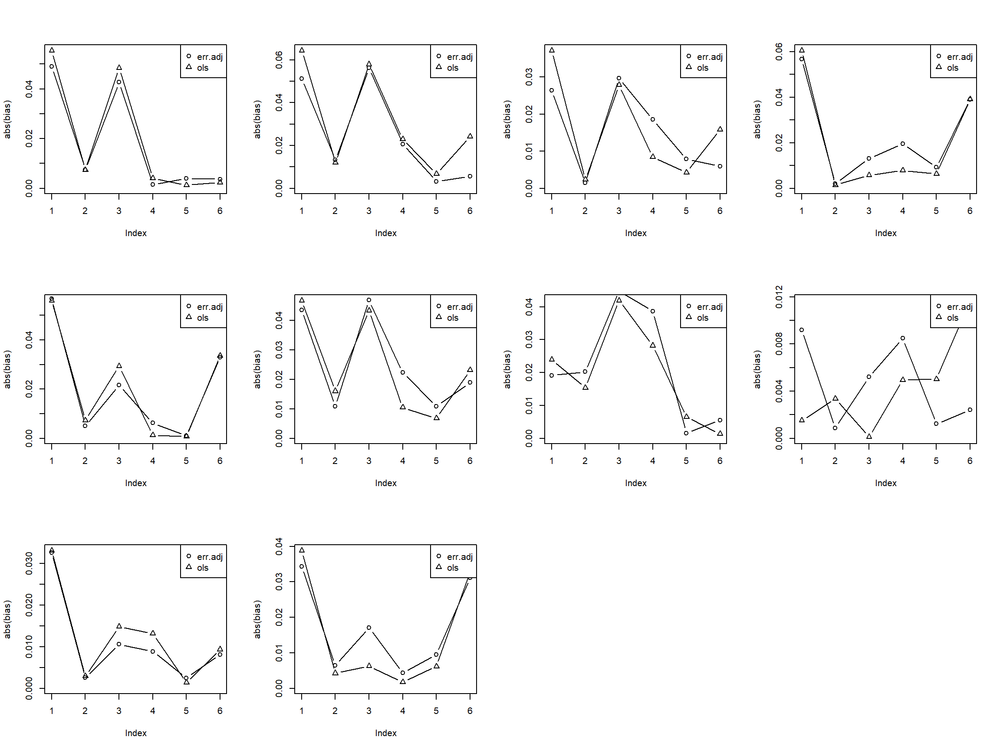

partial weights
DongyueXie
2021-07-04
Last updated: 2021-07-14
Checks: 7 0
Knit directory: deconference/
This reproducible R Markdown analysis was created with workflowr (version 1.6.2). The Checks tab describes the reproducibility checks that were applied when the results were created. The Past versions tab lists the development history.
Great! Since the R Markdown file has been committed to the Git repository, you know the exact version of the code that produced these results.
Great job! The global environment was empty. Objects defined in the global environment can affect the analysis in your R Markdown file in unknown ways. For reproduciblity it’s best to always run the code in an empty environment.
The command set.seed(20200403) was run prior to running the code in the R Markdown file. Setting a seed ensures that any results that rely on randomness, e.g. subsampling or permutations, are reproducible.
Great job! Recording the operating system, R version, and package versions is critical for reproducibility.
Nice! There were no cached chunks for this analysis, so you can be confident that you successfully produced the results during this run.
Great job! Using relative paths to the files within your workflowr project makes it easier to run your code on other machines.
Great! You are using Git for version control. Tracking code development and connecting the code version to the results is critical for reproducibility.
The results in this page were generated with repository version 1a3c6e6. See the Past versions tab to see a history of the changes made to the R Markdown and HTML files.
Note that you need to be careful to ensure that all relevant files for the analysis have been committed to Git prior to generating the results (you can use wflow_publish or wflow_git_commit). workflowr only checks the R Markdown file, but you know if there are other scripts or data files that it depends on. Below is the status of the Git repository when the results were generated:
Ignored files:
Ignored: .Rhistory
Ignored: .Rproj.user/
Untracked files:
Untracked: analysis/neuron_simu_MLN.Rmd
Untracked: analysis/simu_correlation_est_cor_bulkforcor_weights.Rmd
Untracked: code/simulation/neuron/partial_weights.R
Untracked: data/day30.h5
Untracked: data/day30.h5.zip
Untracked: data/neuron/
Untracked: data/pancreas/
Untracked: output/geneCor_DABulk_cpm.rds
Untracked: output/geneCor_Epen1Bulk_cpm.rds
Untracked: output/geneCor_FPPBulk_cpm.rds
Untracked: output/geneCor_P_FPPBulk_cpm.rds
Untracked: output/geneCor_SertBulk_cpm.rds
Untracked: output/geneCor_U_NeurBulk_cpm.rds
Untracked: output/geneCor_gtexpancreas_tpm.rds
Untracked: output/geneCor_neuronBulk_cpm.rds
Untracked: output/neuron/
Untracked: output/simu_correlation_betahat_d500_neuron.rds
Untracked: output/simu_correlation_checkavariance_betahat_d500_xin_est_cor_100bulkforcor_alpha05_addjack.rds
Untracked: output/simu_correlation_checkavariance_betahat_d500_xin_hc3.rds
Untracked: output/simu_correlation_checkavariance_betahat_d500_xin_hc3_only_pos_ecov.rds
Untracked: output/simu_correlation_checkavariance_betahat_d500_xin_jack.rds
Untracked: output/simu_correlation_checkavariance_betahat_d500_xin_trueb.rds
Untracked: output/simu_correlation_checkavariance_betahat_d50_xin_est_cor_100bulkforcor_alpha01.rds
Untracked: output/simu_correlation_checkavariance_betahat_d50_xin_est_cor_100bulkforcor_alpha05.rds
Untracked: output/simu_correlation_checkavariance_betahat_d50_xin_est_cor_100bulkforcor_alpha05_addjack.rds
Untracked: output/simu_correlation_checkavariance_betahat_d50_xin_est_cor_100bulkforcor_alpha05_addjack_weighted.rds
Untracked: output/simu_correlation_checkavariance_betahat_d50_xin_est_cor_100bulkforcor_thresh.rds
Untracked: output/simu_correlation_checkavariance_betahat_d50_xin_est_cor_100indi.rds
Untracked: output/simu_correlation_checkavariance_betahat_d50_xin_est_cor_100indi_alpha03.rds
Untracked: output/simu_correlation_checkavariance_betahat_d50_xin_est_cor_10indi.rds
Untracked: output/simu_correlation_checkavariance_betahat_d50_xin_est_cor_10indi_alpha03.rds
Untracked: renv.lock
Untracked: renv/
Unstaged changes:
Modified: .Rprofile
Modified: analysis/simu_correlation_checkvariance_real.Rmd
Modified: analysis/simu_correlation_est_cor.Rmd
Modified: code/simulation/neuron/simu_neuron.R
Modified: code/unadjusted_lm.R
Note that any generated files, e.g. HTML, png, CSS, etc., are not included in this status report because it is ok for generated content to have uncommitted changes.
These are the previous versions of the repository in which changes were made to the R Markdown (analysis/partial_weights.Rmd) and HTML (docs/partial_weights.html) files. If you’ve configured a remote Git repository (see ?wflow_git_remote), click on the hyperlinks in the table below to view the files as they were in that past version.
| File | Version | Author | Date | Message |
|---|---|---|---|---|
| Rmd | 6c8731a | DongyueXie | 2021-07-14 | wflow_publish(“analysis/partial_weights.Rmd”) |
| html | 8d72d5a | DongyueXie | 2021-07-14 | Build site. |
| Rmd | c18f022 | DongyueXie | 2021-07-14 | wflow_publish(“analysis/partial_weights.Rmd”) |
| html | 0178265 | Dongyue Xie | 2021-07-08 | Build site. |
| Rmd | a0efba9 | Dongyue Xie | 2021-07-08 | wflow_publish(“analysis/partial_weights.Rmd”) |
| html | fe63587 | DongyueXie | 2021-07-08 | Build site. |
| Rmd | 430e159 | DongyueXie | 2021-07-08 | wflow_publish(“analysis/partial_weights.Rmd”) |
Introduction
\(y_g = x_g^T\beta+\epsilon_g = u_g^T\beta + (x_g-u_g)^T\beta+\epsilon_g\).
\(Var((x_g-u_g)^T\beta) = \beta^T\Sigma_g\beta\).
weights = 1/sum(\(\Sigma_g\)).
mse = function(x,y){mean((x-y)^2)}
out = readRDS('output/neuron/neuron_simu_ref11_weight.rds')
out.music = readRDS('output/neuron/neuron_simu_ref11_music.rds')
mse_ols = c()
mse_err = c()
mse_music = c()
coverage = c()
median_std = c()
wald= list()
for(i in 1:length(out)){
mse_ols[i]=mse(out[[i]]$fit.ols$beta_hat,out[[i]]$input$b)
mse_err[i] = mse(out[[i]]$fit.err.hc0$beta_hat,out[[i]]$input$b)
mse_music[i] = mse(out.music[[i]],out[[i]]$input$b)
waldi = list()
waldi[[1]] = (out[[i]]$fit.ols$beta_hat-out[[i]]$input$b)/out[[i]]$fit.ols$ols.out$beta_se
waldi[[2]] = (out[[i]]$fit.ols$beta_hat-out[[i]]$input$b)/out[[i]]$fit.ols$sand.out$beta_se
waldi[[3]] = (out[[i]]$fit.ols$beta_hat-out[[i]]$input$b)/out[[i]]$fit.ols$sand.out.hc3$beta_se
waldi = c(waldi,lapply(2:5,function(j){(out[[i]][[j]]$beta_hat-out[[i]]$input$b)/out[[i]][[j]]$beta_se}))
wald[[i]] = waldi
coverage = rbind(coverage,unlist(lapply(waldi,function(z){mean(z<=1.96,na.rm = T)})))
median_std = rbind(median_std,c(median(c(out[[i]]$fit.ols$ols.out$beta_se)),
median(c(out[[i]]$fit.ols$sand.out$beta_se)),
median(c(out[[i]]$fit.ols$sand.out.hc3$beta_se)),
unlist(lapply(2:5,function(j){median(c(out[[i]][[j]]$beta_se),na.rm = T)}))))
}
colnames(coverage) = c('ols.cv','ols.hc0','ols.hc3','err.hc0','err.hc3','err.cor.hc0','err.cor.hc3')
colnames(median_std) = c('ols.cv','ols.hc0','ols.hc3','err.hc0','err.hc3','err.cor.hc0','err.cor.hc3')
mse_ols[1] 0.004545039 0.003704718 0.004384393 0.003841823 0.005556049 0.004104945
[7] 0.004272168mse_err[1] 0.005215146 0.004231868 0.004987505 0.004607284 0.005886724 0.004016031
[7] 0.005534686mse_music[1] 0.02739864 0.01883983 0.02477552 0.02342291 0.02341840 0.02494983 0.02395437plot(c(out.music[[2]]),type='p',col='gray50',ylab='p',main='music')
lines(c(out[[i]]$input$b),type='p',col=2,pch=20)
plot(c(out[[2]]$fit.err.hc0$beta_hat),type='p',col='gray50',ylab='p',main='err')
lines(c(out[[i]]$input$b),type='p',col=2,pch=20)
coverage ols.cv ols.hc0 ols.hc3 err.hc0 err.hc3 err.cor.hc0 err.cor.hc3
[1,] 1.000000 0.6395349 0.6395349 0.6492248 0.6492248 0.7500000 0.7519380
[2,] 0.998062 0.5930233 0.5930233 0.6472868 0.6472868 0.7883495 0.7902913
[3,] 1.000000 0.6201550 0.6201550 0.6589147 0.6608527 0.8139535 0.8139535
[4,] 1.000000 0.5833333 0.5833333 0.6317829 0.6317829 0.7611650 0.7611650
[5,] 1.000000 0.5872093 0.5872093 0.6143411 0.6143411 0.7203883 0.7203883
[6,] 1.000000 0.6104651 0.6104651 0.6182171 0.6182171 0.7611650 0.7611650
[7,] 0.998062 0.5581395 0.5581395 0.5910853 0.5910853 0.7320388 0.7320388median_std ols.cv ols.hc0 ols.hc3 err.hc0 err.hc3 err.cor.hc0
[1,] 0.2297810 0.006728050 0.006739205 0.008111666 0.008139087 0.02005209
[2,] 0.1512402 0.006513123 0.006524146 0.008504852 0.008523507 0.02109290
[3,] 0.2669766 0.007124083 0.007139598 0.009532747 0.009561414 0.02838560
[4,] 0.1554656 0.006282571 0.006293175 0.007973832 0.007995723 0.01929333
[5,] 0.2214375 0.006868259 0.006881860 0.007787565 0.007801816 0.01978804
[6,] 0.1812738 0.006663342 0.006675844 0.008475357 0.008493776 0.01959885
[7,] 0.1516576 0.006668559 0.006681370 0.008624034 0.008641819 0.02204580
err.cor.hc3
[1,] 0.02006688
[2,] 0.02113185
[3,] 0.02838275
[4,] 0.01931023
[5,] 0.01981482
[6,] 0.01963692
[7,] 0.02207265out = readRDS('output/neuron/neuron_simu_ref11_ebV.rds')
out.music = readRDS('output/neuron/neuron_simu_ref11_music.rds')
mse_ols = c()
mse_err = c()
mse_music = c()
coverage = c()
median_std = c()
wald= list()
for(i in 1:length(out)){
mse_ols[i]=mse(out[[i]]$fit.ols$beta_hat,out[[i]]$input$b)
mse_err[i] = mse(out[[i]]$fit.err.hc0$beta_hat,out[[i]]$input$b)
mse_music[i] = mse(out.music[[i]],out[[i]]$input$b)
waldi = list()
waldi[[1]] = (out[[i]]$fit.ols$beta_hat-out[[i]]$input$b)/out[[i]]$fit.ols$ols.out$beta_se
waldi[[2]] = (out[[i]]$fit.ols$beta_hat-out[[i]]$input$b)/out[[i]]$fit.ols$sand.out$beta_se
waldi[[3]] = (out[[i]]$fit.ols$beta_hat-out[[i]]$input$b)/out[[i]]$fit.ols$sand.out.hc3$beta_se
waldi = c(waldi,lapply(2:5,function(j){(out[[i]][[j]]$beta_hat-out[[i]]$input$b)/out[[i]][[j]]$beta_se}))
wald[[i]] = waldi
coverage = rbind(coverage,unlist(lapply(waldi,function(z){mean(z<=1.96,na.rm = T)})))
median_std = rbind(median_std,c(median(c(out[[i]]$fit.ols$ols.out$beta_se)),
median(c(out[[i]]$fit.ols$sand.out$beta_se)),
median(c(out[[i]]$fit.ols$sand.out.hc3$beta_se)),
unlist(lapply(2:5,function(j){median(c(out[[i]][[j]]$beta_se),na.rm = T)}))))
}
colnames(coverage) = c('ols.cv','ols.hc0','ols.hc3','err.hc0','err.hc3','err.cor.hc0','err.cor.hc3')
colnames(median_std) = c('ols.cv','ols.hc0','ols.hc3','err.hc0','err.hc3','err.cor.hc0','err.cor.hc3')
mse_ols[1] 0.02893245 0.02380714 0.02512115 0.02481026 0.02329452 0.02715525mse_err[1] 0.03303433 0.04345972 0.03182672 0.03010591 0.02554301 0.03522066mse_music[1] 0.02739864 0.01883983 0.02477552 0.02342291 0.02341840 0.02494983plot(c(out.music[[2]]),type='p',col='gray50',ylab='p',main='music')
lines(c(out[[i]]$input$b),type='p',col=2,pch=20)
plot(c(out[[2]]$fit.err.hc0$beta_hat),type='p',col='gray50',ylab='p',main='err')
lines(c(out[[i]]$input$b),type='p',col=2,pch=20)
coverage ols.cv ols.hc0 ols.hc3 err.hc0 err.hc3 err.cor.hc0 err.cor.hc3
[1,] 0.5639535 0.9437984 0.9941860 0.9631783 0.998062 0.9354067 0.9961240
[2,] 0.6104651 0.9515504 0.9883721 0.9883721 0.998062 0.9765396 1.0000000
[3,] 0.5542636 0.9612403 1.0000000 0.9748062 1.000000 0.9463087 1.0000000
[4,] 0.5503876 0.9263566 0.9941860 0.9670543 1.000000 0.9522673 1.0000000
[5,] 0.5581395 0.9089147 0.9980620 0.9593023 1.000000 0.9152120 0.9922179
[6,] 0.5658915 0.9224806 0.9961240 0.9689922 1.000000 0.9454976 1.0000000median_std ols.cv ols.hc0 ols.hc3 err.hc0 err.hc3 err.cor.hc0
[1,] 1.016536e-04 0.1369415 1.167354 0.1680614 7.824982 0.1597263
[2,] 1.105145e-04 0.1668312 1.318518 0.3059096 4.097920 0.2019573
[3,] 1.226613e-04 0.1428587 2.047189 0.1935799 5.150748 0.1811756
[4,] 9.255540e-05 0.1129859 1.301881 0.1758283 3.478471 0.1577561
[5,] 8.259210e-05 0.1083767 1.139544 0.1490066 3.514074 0.1201799
[6,] 9.700177e-05 0.1209632 1.370504 0.1701724 271.647513 0.1483125
err.cor.hc3
[1,] 8.423979
[2,] 4.419130
[3,] 6.423174
[4,] 3.816095
[5,] 3.733607
[6,] 272.539084removing outliers
mse = function(x,y){mean((x-y)^2)}
out = readRDS('output/neuron/neuron_simu_ref11_rm_outlier_weight.rds')
out.music = readRDS('output/neuron/neuron_simu_ref11_music.rds')
mse_ols = c()
mse_err = c()
mse_music = c()
coverage = c()
median_std = c()
wald= list()
for(i in 1:length(out)){
mse_ols[i]=mse(out[[i]]$fit.ols$beta_hat,out[[i]]$input$b)
mse_err[i] = mse(out[[i]]$fit.err.hc0$beta_hat,out[[i]]$input$b)
mse_music[i] = mse(out.music[[i]],out[[i]]$input$b)
waldi = list()
waldi[[1]] = (out[[i]]$fit.ols$beta_hat-out[[i]]$input$b)/out[[i]]$fit.ols$ols.out$beta_se
waldi[[2]] = (out[[i]]$fit.ols$beta_hat-out[[i]]$input$b)/out[[i]]$fit.ols$sand.out$beta_se
waldi[[3]] = (out[[i]]$fit.ols$beta_hat-out[[i]]$input$b)/out[[i]]$fit.ols$sand.out.hc3$beta_se
waldi = c(waldi,lapply(2:5,function(j){(out[[i]][[j]]$beta_hat-out[[i]]$input$b)/out[[i]][[j]]$beta_se}))
wald[[i]] = waldi
coverage = rbind(coverage,unlist(lapply(waldi,function(z){mean(z<=1.96,na.rm = T)})))
median_std = rbind(median_std,c(median(c(out[[i]]$fit.ols$ols.out$beta_se)),
median(c(out[[i]]$fit.ols$sand.out$beta_se)),
median(c(out[[i]]$fit.ols$sand.out.hc3$beta_se)),
unlist(lapply(2:5,function(j){median(c(out[[i]][[j]]$beta_se),na.rm = T)}))))
}
colnames(coverage) = c('ols.cv','ols.hc0','ols.hc3','err.hc0','err.hc3','err.cor.hc0','err.cor.hc3')
colnames(median_std) = c('ols.cv','ols.hc0','ols.hc3','err.hc0','err.hc3','err.cor.hc0','err.cor.hc3')
mse_ols [1] 0.004542357 0.005757824 0.003878408 0.005240443 0.005125419 0.004503564
[7] 0.003897158 0.003598379 0.004557307 0.004443802mse_err [1] 0.005204486 0.005746078 0.004156249 0.005764840 0.005759093 0.004904345
[7] 0.004653332 0.004409874 0.005425968 0.004785192mse_music [1] 0.02739864 0.01883983 0.02477552 0.02342291 0.02341840 0.02494983
[7] 0.02395437 0.02277054 0.02092650 0.02280265coverage ols.cv ols.hc0 ols.hc3 err.hc0 err.hc3 err.cor.hc0 err.cor.hc3
[1,] 0.9980620 0.6434109 0.6434109 0.6531008 0.6531008 0.7519380 0.7519380
[2,] 0.9961240 0.6046512 0.6065891 0.6298450 0.6298450 0.7764706 0.7764706
[3,] 0.9980620 0.6259690 0.6259690 0.6414729 0.6414729 0.7689320 0.7689320
[4,] 0.9980620 0.6492248 0.6492248 0.6531008 0.6531008 0.7825243 0.7825243
[5,] 0.9883721 0.6279070 0.6279070 0.6395349 0.6414729 0.7514563 0.7514563
[6,] 0.9980620 0.5988372 0.5988372 0.6143411 0.6143411 0.7598425 0.7598425
[7,] 0.9961240 0.5949612 0.5949612 0.6317829 0.6317829 0.7871094 0.7871094
[8,] 0.9922481 0.6007752 0.6007752 0.6531008 0.6531008 0.7829457 0.7829457
[9,] 0.9941860 0.6162791 0.6162791 0.6550388 0.6569767 0.7732558 0.7732558
[10,] 0.9980620 0.6259690 0.6259690 0.6647287 0.6647287 0.7949219 0.7949219median_std ols.cv ols.hc0 ols.hc3 err.hc0 err.hc3 err.cor.hc0
[1,] 0.11437929 0.006701365 0.006713628 0.008185126 0.008210019 0.02007434
[2,] 0.10399061 0.006536964 0.006548543 0.008001678 0.008027435 0.02171165
[3,] 0.10513017 0.006504498 0.006524253 0.007679320 0.007704220 0.01875083
[4,] 0.14528302 0.007071918 0.007081492 0.009296216 0.009319382 0.02488313
[5,] 0.08041214 0.006506501 0.006517667 0.007749329 0.007770589 0.01831143
[6,] 0.10598298 0.006583356 0.006598033 0.007990342 0.008011053 0.01975682
[7,] 0.08205023 0.006417704 0.006428104 0.007783126 0.007802545 0.02035408
[8,] 0.07998595 0.006396111 0.006410925 0.008189615 0.008213837 0.01987956
[9,] 0.08960708 0.006569231 0.006579636 0.007882947 0.007902590 0.02060249
[10,] 0.09925677 0.006638091 0.006653728 0.008009549 0.008038095 0.01966040
err.cor.hc3
[1,] 0.02009285
[2,] 0.02176970
[3,] 0.01879929
[4,] 0.02492035
[5,] 0.01833000
[6,] 0.01978780
[7,] 0.02036047
[8,] 0.01993748
[9,] 0.02063280
[10,] 0.01968663bias
par(mfrow=c(3,4))
for(j in 1:length(out)){
mean_bhat1 = rowMeans(out[[j]]$fit.err.hc0$beta_hat[,1:43])
mean_bhat1_ols = rowMeans(out[[j]]$fit.ols$beta_hat[,1:43])
plot(abs(mean_bhat1 - out[[j]]$input$b[,1]),type='b',
ylim=range(c(0,range(abs(mean_bhat1_ols - out[[j]]$input$b[,1])))),
ylab='abs(bias)')
lines(abs(mean_bhat1_ols - out[[j]]$input$b[,1]),type='b',pch=2)
legend('topright',c('err.adj','ols'),pch=c(1,2))
}
par(mfrow=c(3,4))for(j in 1:length(out)){
mean_bhat2 = rowMeans(out[[j]]$fit.err.hc0$beta_hat[,44:86])
mean_bhat2_ols = rowMeans(out[[j]]$fit.ols$beta_hat[,44:86])
plot(abs(mean_bhat2 - out[[j]]$input$b[,86]),type='b',
ylim=range(c(0,range(abs(mean_bhat2_ols - out[[j]]$input$b[,86])))),
ylab='abs(bias)')
lines(abs(mean_bhat2_ols - out[[j]]$input$b[,86]),type='b',pch=2)
legend('topright',c('err.adj','ols'),pch=c(1,2))
}
look at weights
par(mfrow=c(1,1))
quantile(out[[1]]$w) 0% 25% 50% 75% 100%
5.156594e-07 6.203222e-02 3.131319e-01 1.179595e+00 1.093561e+01 X = readRDS('output/neuron/ref_12400.rds')
plot(rowMeans(X),1/out[[1]]$w,ylab='1/weight',xlab='mean gene expression')ii = which.min(out[[1]]$w)
plot(rowMeans(X[-ii,]),1/out[[1]]$w[-ii],ylab='1/weight',xlab='mean gene expression')eb V
mse = function(x,y){mean((x-y)^2)}
out = readRDS('output/neuron/neuron_simu_ref11_rm_outlier_ebV.rds')
mse_ols = c()
mse_err = c()
mse_music = c()
coverage = c()
median_std = c()
wald= list()
for(i in 1:length(out)){
mse_ols[i]=mse(out[[i]]$fit.ols$beta_hat,out[[i]]$input$b)
mse_err[i] = mse(out[[i]]$fit.err.hc0$beta_hat,out[[i]]$input$b)
mse_music[i] = mse(out.music[[i]],out[[i]]$input$b)
waldi = list()
waldi[[1]] = (out[[i]]$fit.ols$beta_hat-out[[i]]$input$b)/out[[i]]$fit.ols$ols.out$beta_se
waldi[[2]] = (out[[i]]$fit.ols$beta_hat-out[[i]]$input$b)/out[[i]]$fit.ols$sand.out$beta_se
waldi[[3]] = (out[[i]]$fit.ols$beta_hat-out[[i]]$input$b)/out[[i]]$fit.ols$sand.out.hc3$beta_se
waldi = c(waldi,lapply(2:5,function(j){(out[[i]][[j]]$beta_hat-out[[i]]$input$b)/out[[i]][[j]]$beta_se}))
wald[[i]] = waldi
coverage = rbind(coverage,unlist(lapply(waldi,function(z){mean(z<=1.96,na.rm = T)})))
median_std = rbind(median_std,c(median(c(out[[i]]$fit.ols$ols.out$beta_se)),
median(c(out[[i]]$fit.ols$sand.out$beta_se)),
median(c(out[[i]]$fit.ols$sand.out.hc3$beta_se)),
unlist(lapply(2:5,function(j){median(c(out[[i]][[j]]$beta_se),na.rm = T)}))))
}
colnames(coverage) = c('ols.cv','ols.hc0','ols.hc3','err.hc0','err.hc3','err.cor.hc0','err.cor.hc3')
colnames(median_std) = c('ols.cv','ols.hc0','ols.hc3','err.hc0','err.hc3','err.cor.hc0','err.cor.hc3')
mse_ols [1] 0.01330567 0.01321298 0.01412674 0.01188626 0.01185091 0.01411527
[7] 0.01259236 0.01075386 0.01163357 0.01376980mse_err [1] 0.01257658 0.01340852 0.01433300 0.01290737 0.01250903 0.01439501
[7] 0.01394590 0.01221613 0.01272367 0.01406995mse_music [1] 0.02739864 0.01883983 0.02477552 0.02342291 0.02341840 0.02494983
[7] 0.02395437 0.02277054 0.02092650 0.02280265coverage ols.cv ols.hc0 ols.hc3 err.hc0 err.hc3 err.cor.hc0 err.cor.hc3
[1,] 0.5406977 0.9089147 0.9244186 0.9166667 0.9321705 0.9207317 0.9373737
[2,] 0.5174419 0.9282946 0.9399225 0.9360465 0.9534884 0.9385246 0.9527721
[3,] 0.5697674 0.9147287 0.9360465 0.9166667 0.9476744 0.9191321 0.9388560
[4,] 0.5096899 0.9709302 0.9806202 0.9786822 0.9883721 0.9661355 0.9718876
[5,] 0.5096899 0.8914729 0.9050388 0.8972868 0.9166667 0.8997912 0.9096639
[6,] 0.5193798 0.8914729 0.9127907 0.9050388 0.9244186 0.9118236 0.9183267
[7,] 0.5872093 0.8779070 0.8914729 0.8817829 0.8992248 0.8723404 0.8834746
[8,] 0.5426357 0.9069767 0.9186047 0.9050388 0.9244186 0.8918322 0.9015317
[9,] 0.5426357 0.8895349 0.9069767 0.8992248 0.9282946 0.9004149 0.9159836
[10,] 0.5562016 0.9011628 0.9127907 0.9089147 0.9302326 0.9060000 0.9244533median_std ols.cv ols.hc0 ols.hc3 err.hc0 err.hc3 err.cor.hc0
[1,] 6.955269e-05 0.06948385 0.07673684 0.07242027 0.08060366 0.07208898
[2,] 6.732918e-05 0.06405416 0.07144322 0.06699602 0.07643915 0.07203775
[3,] 7.005126e-05 0.06576635 0.07308400 0.06798811 0.07549088 0.06763527
[4,] 8.457629e-05 0.08657726 0.09904866 0.09409283 0.10912030 0.11316027
[5,] 5.986332e-05 0.05882546 0.06560997 0.06706997 0.07503699 0.06562952
[6,] 6.501828e-05 0.05764026 0.06533728 0.06134377 0.06946951 0.06399717
[7,] 5.996891e-05 0.05528400 0.06069366 0.05987088 0.06693985 0.05079801
[8,] 6.244896e-05 0.06097089 0.06866380 0.06636506 0.07380969 0.06031402
[9,] 6.458571e-05 0.06006045 0.06683413 0.06636611 0.07601274 0.06153602
[10,] 6.482810e-05 0.06045939 0.06737050 0.06356902 0.07210833 0.06582619
err.cor.hc3
[1,] 0.07823873
[2,] 0.07834840
[3,] 0.07565007
[4,] 0.12493205
[5,] 0.07232985
[6,] 0.07166766
[7,] 0.05508729
[8,] 0.06687794
[9,] 0.06789950
[10,] 0.07343933out[[1]]$input$b[,1:5] [,1] [,2] [,3] [,4] [,5]
[1,] 0.10 0.10 0.10 0.10 0.10
[2,] 0.10 0.10 0.10 0.10 0.10
[3,] 0.15 0.15 0.15 0.15 0.15
[4,] 0.15 0.15 0.15 0.15 0.15
[5,] 0.20 0.20 0.20 0.20 0.20
[6,] 0.30 0.30 0.30 0.30 0.30round(out[[1]]$fit.err.hc0$beta_hat[,1:5],3) [,1] [,2] [,3] [,4] [,5]
[1,] 0.000 0.009 0.094 0.054 0.126
[2,] 0.044 0.000 0.117 0.116 0.030
[3,] 0.198 0.339 0.290 0.177 0.061
[4,] 0.219 0.319 0.000 0.227 0.225
[5,] 0.112 0.119 0.161 0.100 0.156
[6,] 0.427 0.214 0.337 0.325 0.402round(out[[1]]$fit.ols$beta_hat[,1:5],3) [,1] [,2] [,3] [,4] [,5]
DA 0.028 0.061 0.152 0.110 0.183
Epen1 0.055 0.000 0.126 0.124 0.039
Sert 0.183 0.317 0.268 0.158 0.045
FPP 0.232 0.327 0.000 0.230 0.225
P_FPP 0.123 0.126 0.168 0.106 0.162
U_Neur 0.378 0.169 0.287 0.271 0.346round(out.music[[1]][,1:5],3) [,1] [,2] [,3] [,4] [,5]
[1,] 0.000 0.000 0.455 0.263 0.459
[2,] 0.050 0.036 0.250 0.005 0.000
[3,] 0.216 0.294 0.048 0.092 0.000
[4,] 0.000 0.075 0.083 0.256 0.210
[5,] 0.410 0.385 0.164 0.257 0.318
[6,] 0.324 0.210 0.000 0.128 0.013bias
par(mfrow=c(3,4))
for(j in 1:length(out)){
mean_bhat1 = rowMeans(out[[j]]$fit.err.hc0$beta_hat[,1:43])
mean_bhat1_ols = rowMeans(out[[j]]$fit.ols$beta_hat[,1:43])
plot(abs(mean_bhat1 - out[[j]]$input$b[,1]),type='b',
ylim=range(c(0,range(abs(mean_bhat1_ols - out[[j]]$input$b[,1])))),
ylab='abs(bias)')
lines(abs(mean_bhat1_ols - out[[j]]$input$b[,1]),type='b',pch=2)
legend('topright',c('err.adj','ols'),pch=c(1,2))
}
par(mfrow=c(3,4))for(j in 1:length(out)){
mean_bhat2 = rowMeans(out[[j]]$fit.err.hc0$beta_hat[,44:86])
mean_bhat2_ols = rowMeans(out[[j]]$fit.ols$beta_hat[,44:86])
plot(abs(mean_bhat2 - out[[j]]$input$b[,86]),type='b',
ylim=range(c(0,range(abs(mean_bhat2_ols - out[[j]]$input$b[,86])))),
ylab='abs(bias)')
lines(abs(mean_bhat2_ols - out[[j]]$input$b[,86]),type='b',pch=2)
legend('topright',c('err.adj','ols'),pch=c(1,2))
}
sessionInfo()R version 4.0.3 (2020-10-10)
Platform: x86_64-w64-mingw32/x64 (64-bit)
Running under: Windows 10 x64 (build 19041)
Matrix products: default
locale:
[1] LC_COLLATE=English_United States.1252
[2] LC_CTYPE=English_United States.1252
[3] LC_MONETARY=English_United States.1252
[4] LC_NUMERIC=C
[5] LC_TIME=English_United States.1252
attached base packages:
[1] stats graphics grDevices utils datasets methods base
other attached packages:
[1] workflowr_1.6.2
loaded via a namespace (and not attached):
[1] Rcpp_1.0.5 whisker_0.4 knitr_1.30 magrittr_2.0.1
[5] R6_2.5.0 rlang_0.4.10 fansi_0.4.2 stringr_1.4.0
[9] tools_4.0.3 xfun_0.22 utf8_1.2.1 git2r_0.27.1
[13] htmltools_0.5.1.1 ellipsis_0.3.1 rprojroot_2.0.2 yaml_2.2.1
[17] digest_0.6.27 tibble_3.1.0 lifecycle_1.0.0 crayon_1.4.1
[21] later_1.1.0.1 vctrs_0.3.7 promises_1.1.1 fs_1.5.0
[25] glue_1.4.2 evaluate_0.14 rmarkdown_2.5 stringi_1.5.3
[29] compiler_4.0.3 pillar_1.6.0 httpuv_1.5.4 pkgconfig_2.0.3